栅格化系统在设计中的运用
12 OCT 2017
_______________________
刚开始对栅格系统有很多疑惑，什么是栅格化系统？Bootstrap中为什么要使用栅格系统？设计师为什么要学习栅格系统？如何学习运用？后来发现有很多小伙伴也都有这样的疑问，最近又看到大神Sky密圈的经验分享，于是决定自己也整理一下栅格系统的理解和学习总结。
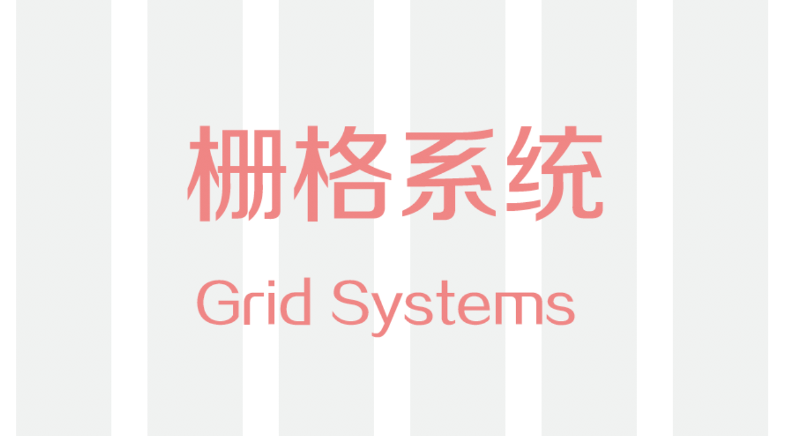
对于栅格系统
栅格就是网格，我们很小就会接触到网格，比如小时候的方格本作文本，画的表格等等，利用表格进行分类排版。UI中的栅格系统就是对各个平台的网格布局进行系统化，比如网页的网格定义，APP的网格定义。
设计师为什么要学习栅格系统？
栅格化系统是设计的一个基本原则，能够有规律的排版页面的布局，在CSS的Bootstrap中采用栅格系统能够更好的进行页面布局。栅格系统就是网格，利用建立的网格进行布局排版。在广告排版、海报画册、网站界面等领域都能广泛运用。
栅格化系统的最小单位
在UI设计栅格系统中的最小单位就是设计界面的单位基础，界面内的设计元素和排版都是依照这个基础单位建立和布局的，常见的Web端最小单位是10，移动端常用最小单位是3、4、5，不过这些也不是固定的，目前设计界面的最小单位变的越来越大国外很多软件都流行了大留白。
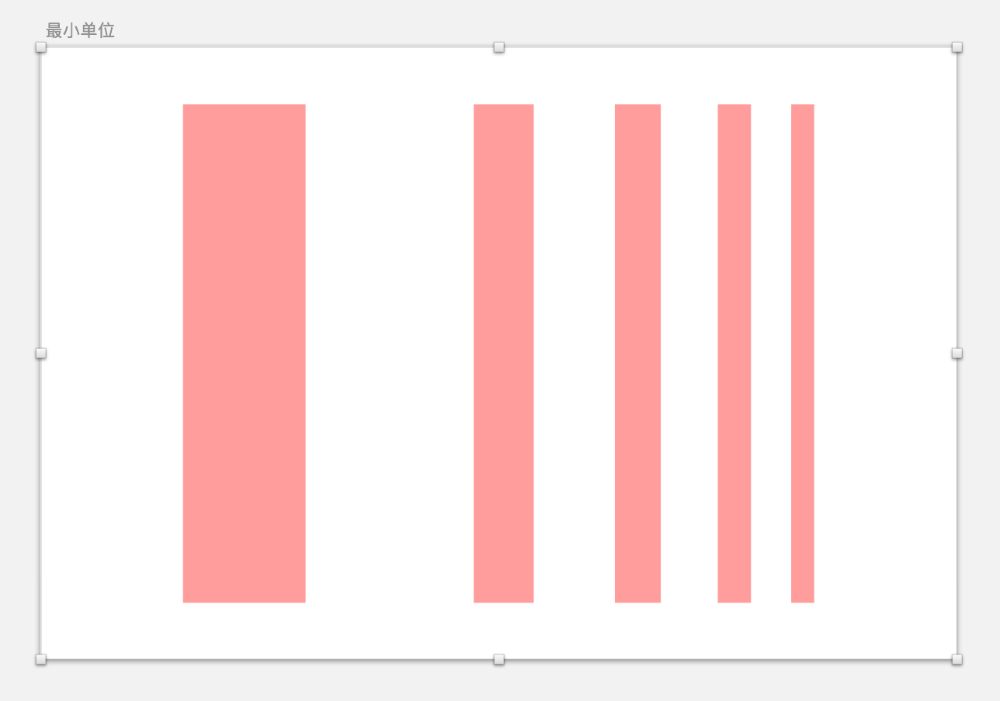
列
列是栅格系统纵向排布依据，常用的PC端是12列，移动端是6列。列数越多纵向排布内容就可以越细致，但是版面内容就会变的更稠密，内容更碎。
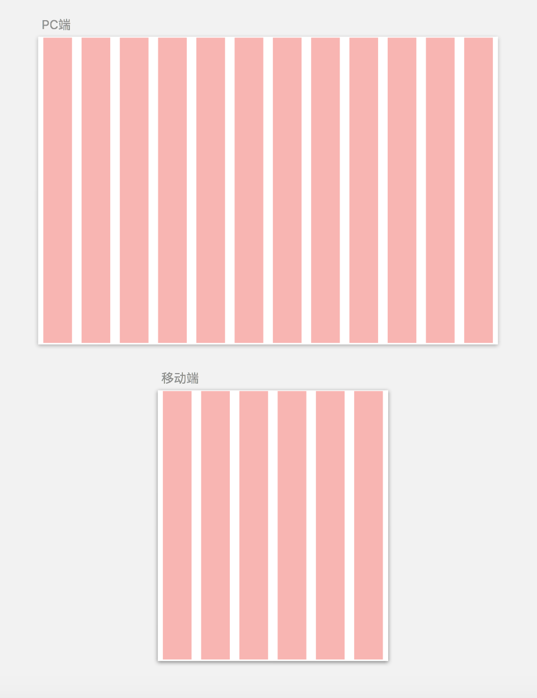
行
行是栅格系统的横向排布依据，目前大都是瀑布流形式显示内容不固定高度让行数变成未知数，很多设计师常会忽略行布局，合理运用行能够让页面分类内容布局变的更合理化。
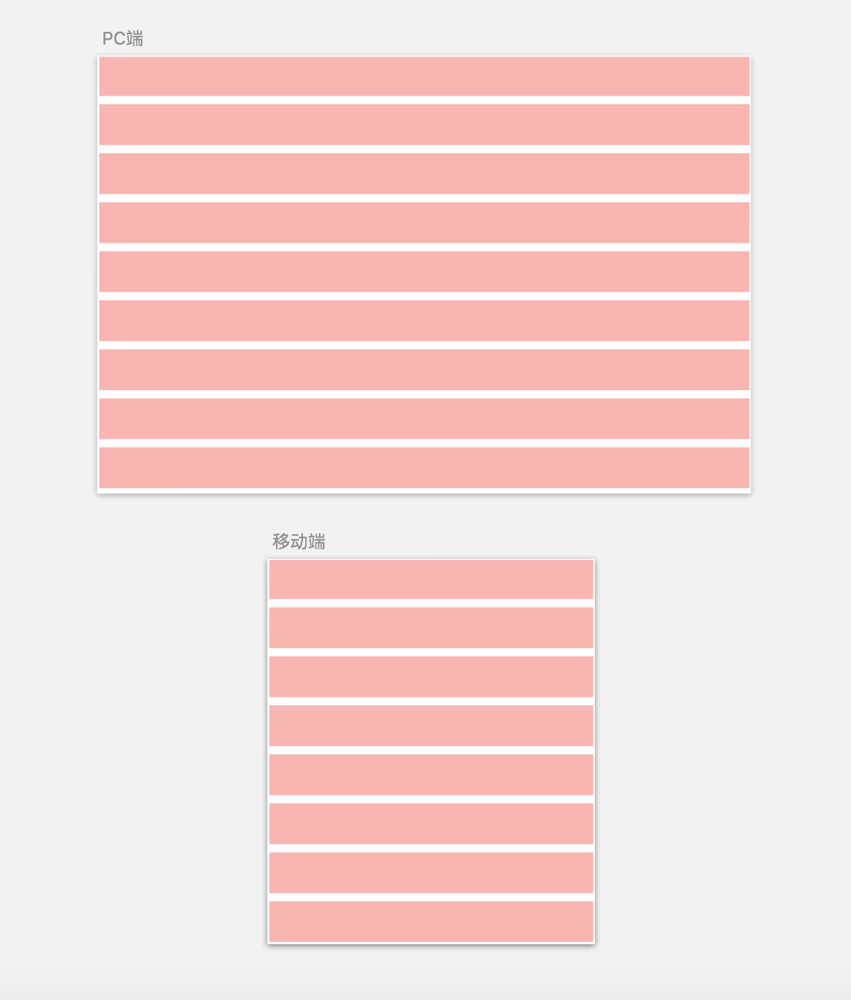
水槽
水槽就是列和行的分割间距，水槽越大页面布局间距就越大，水槽越小页面就越紧凑。需要强调的是，水槽里不能放置内容。
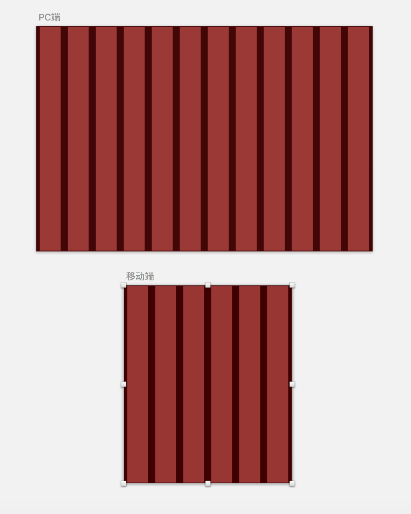
屏幕安全边距
边距就是栅格之外的屏幕边缘内容，这里是不能放置内容的。移动端主要是两边与屏幕的边缘距离，Web端就是指两边的留白区域。
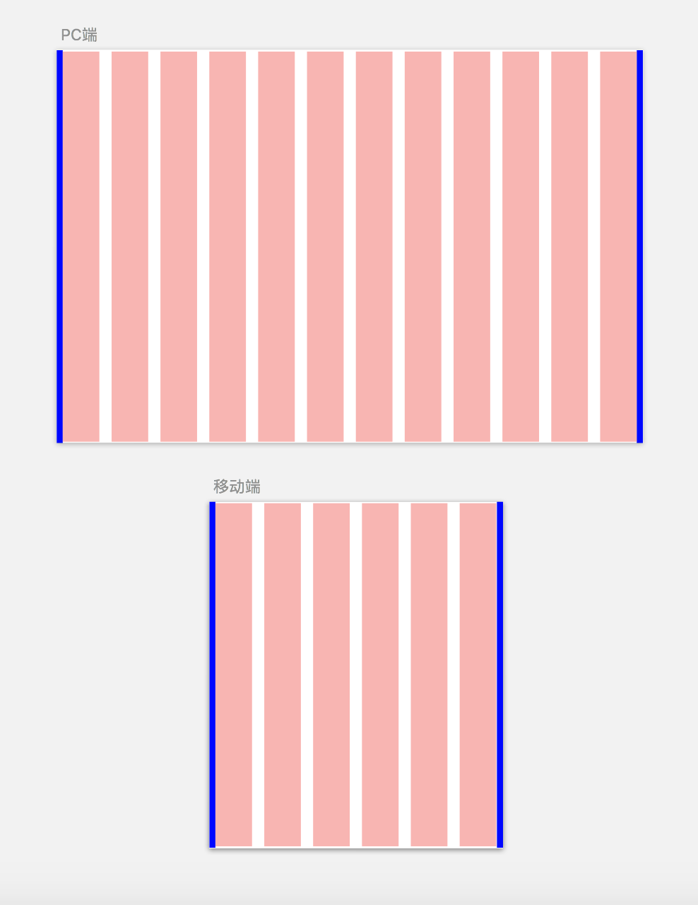
内容区
内容区就是行和列交叉所形成的区域，主要用来放置设计内容。
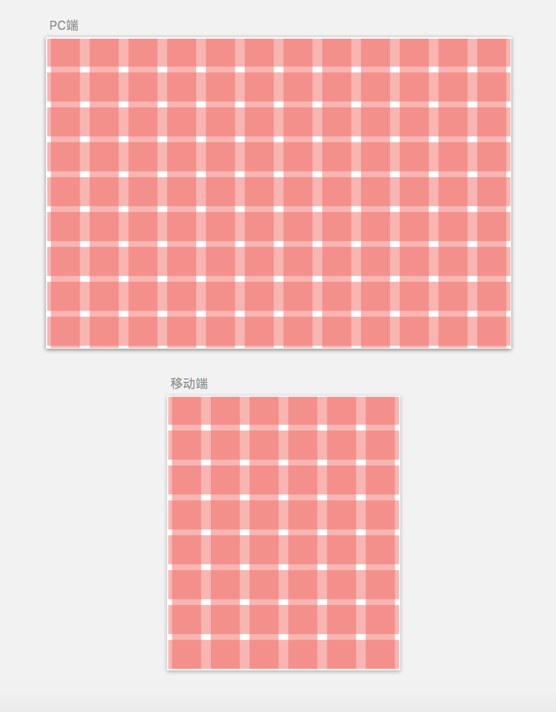
以上几个算是栅格系统的几个基础单位，记着几个敏感数字，常用PC端最小单位是10，列是12；移动端最小单位是3，4，5，6，列是6，水槽和边距不要放置内容。
在设计中，我们该如何定义栅格系统呢？
先根据你的项目类型面向风格决定这款产品的最小单位，然后决定水槽和安全边距从而得到内容区大小。
这个该如何计算呢？
举个例子，拿宽度为1920来说，如果你用常用的12分栏，得到每一等分的宽度就是1920除以12等于160，160包括列宽和水槽，我们就可以定列宽为120，水槽为40（列宽：水槽=3：1）。安全边距是水槽的一半，就是20。这样一个1920的栅格系统就基本出来了。
但是呢，咱们要活学活用根据根据自己情况来决定，也不是非得按这些死数据，可以根据自己的项目和平时积累的知识来决定栅格系统。
这里有栅格化系统设计的计算方法，如果你口算能力没那么强，就拿出笔和计算器好好算一下吧！
栅格化系统设计的计算原理
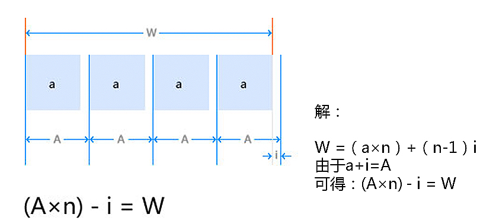当n ＝ 24, i = 10;假如A＝40，则W＝950；假如A＝50，则W＝1190；假如A＝60，则W＝1430。
当n ＝ 24, i = 20;假如A＝50，则W＝1180；
当n ＝ 12, i = 20;假如A＝100，则W＝1180；
栅格化是通过确定等分的单位宽度以及单位宽度之间的间距，把单位宽度进行组合的一种排版方式。在进行设计之前要做好计划和计算。
工具的设置
PS中的网格设置
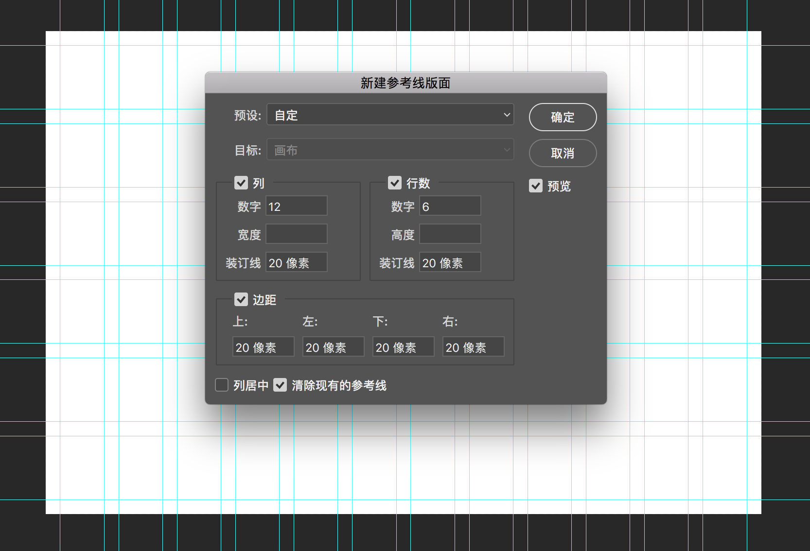PS的网格插件(GuideGuide)
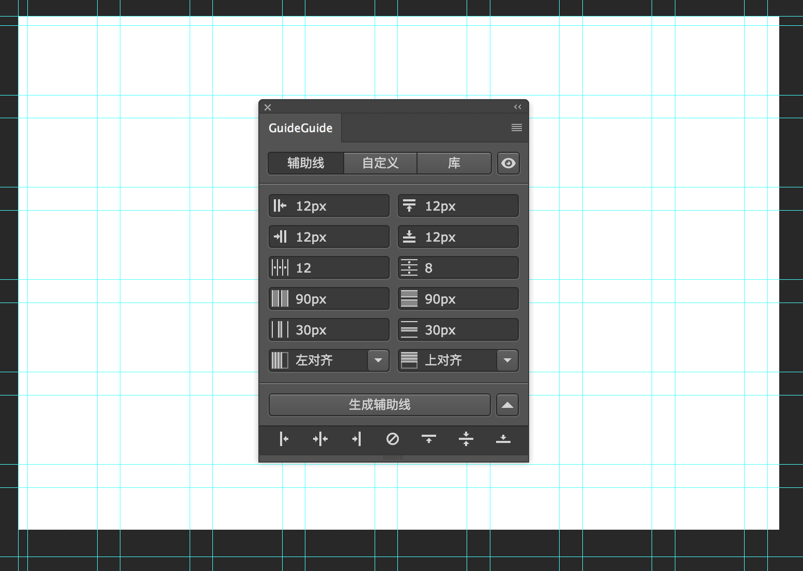插件地址（guideguide.me）是付费的，免费的网上也有。
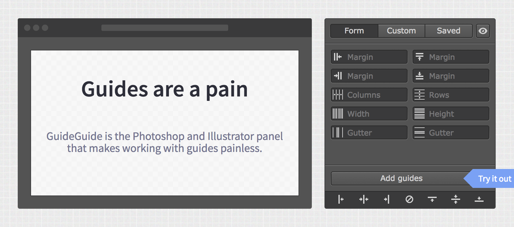Sketch中的网格设置
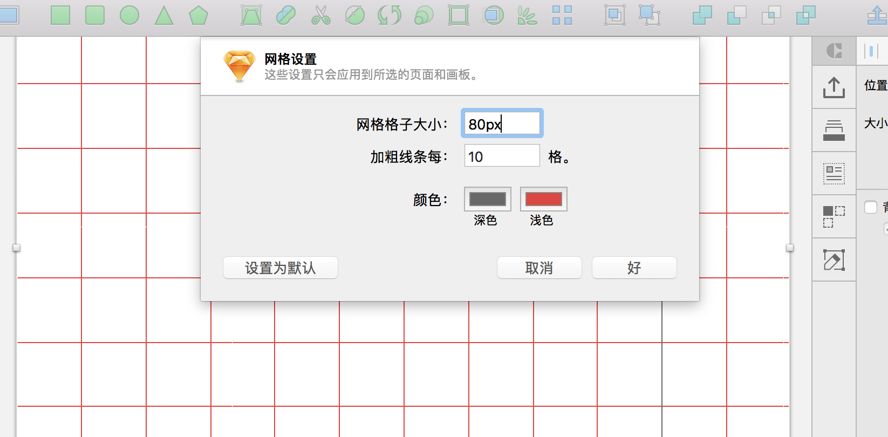Sketch中的布局设置
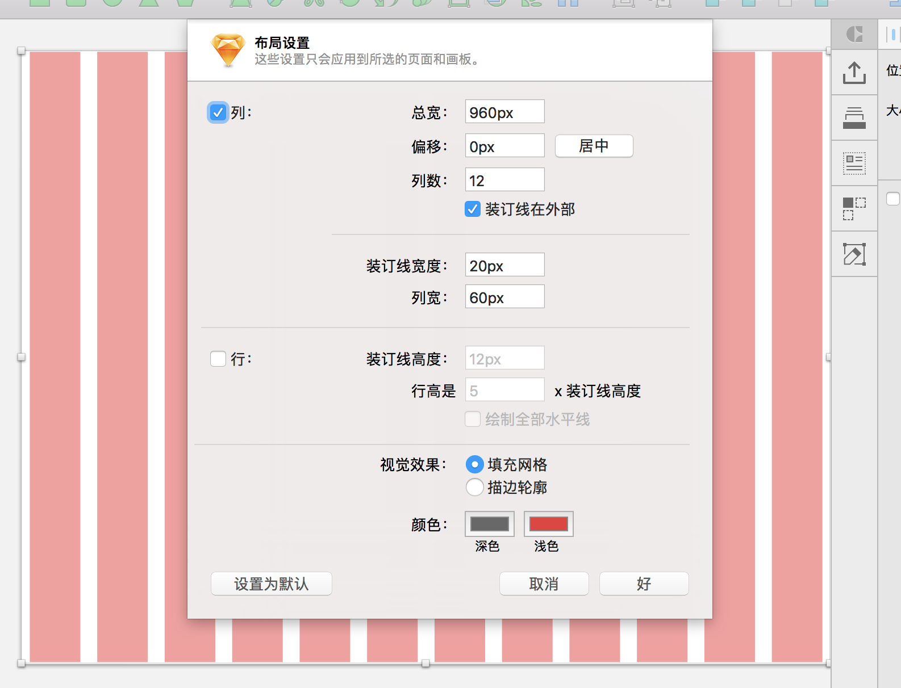Sketch中插件(Craft)中的复制功能，其他的资源库也很有用哦。
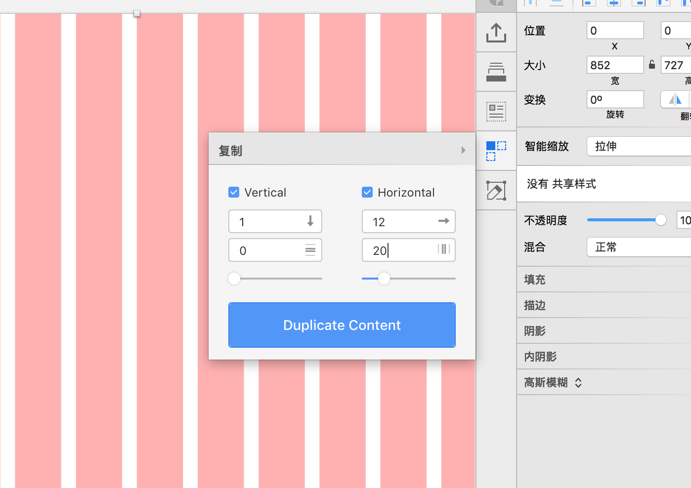插件地址（www.invisionapp.com/craft）除此之外还有很强大的功能，大家可以研究一下。
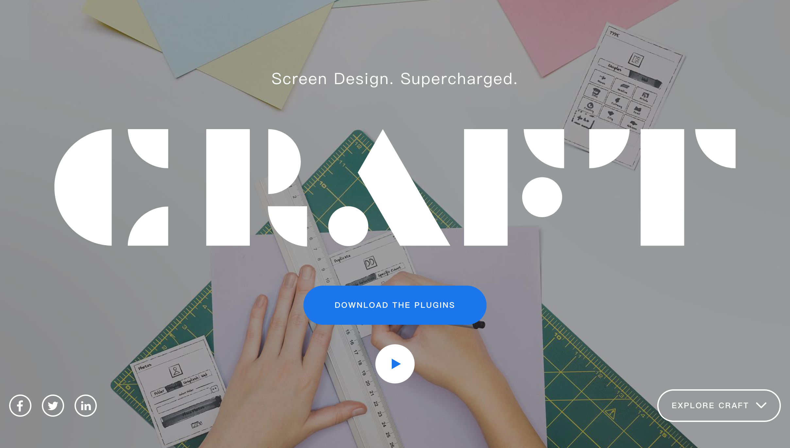这里只是简单介绍了一下栅格系统在设计中的运用，大家要结合自己平时积累的知识来搭建自己项目的栅格系统，除此之外还要了解一些比例，布局的相关知识，像对角比例，三等分比例，三角形比例，黄金分割金色螺旋线比例等和各种类型布局知识。
感谢大家的关注和支持，大家一起学习。
Learning Conclusion Thinking